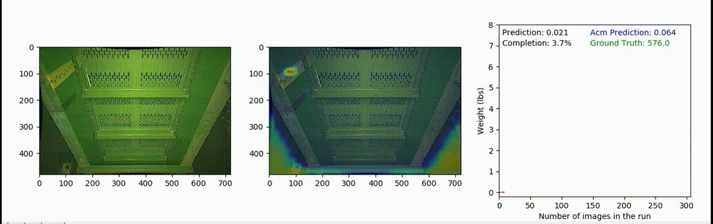

In this work we implemented a deep neural network (DNN) working in a semi-supervised fashion to capture a physical property (mass) of flowing material.
The data is sparesly labeled hence we developed a novel method to handle the sparsity and making strong infernce on material mass. To read more on this, please
check out our full story on medium here
Technologies Used: DNN, Python, TensorFlow.
Technologies Used: DNN, Python, TensorFlow.
Mass Estimation from Images using a DNN
In our proposed method we take advantage of measurements with sparse ground truth to train a predictive model, a tractable relationship must be asserted and hold between the measurements and labels. As long as that relationship can be formed into a loss function that can then be optimized, a model can be trained.